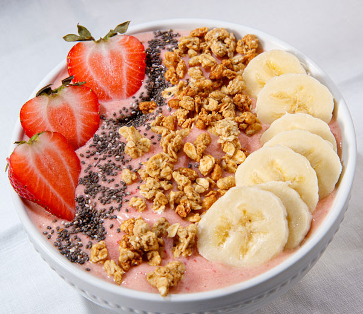

Strawberry Banana Bowl

Description
Strawberry banana bowl is healthy, fresh and tasty choice for breakfast. You can feel the happiness increasing while
you are eating your home made vegetarian bowl. You can add different types of fruits and nuts as you wish.
Ingredients
- 150 grams of strawberry
- 2 middle sized banana
- 2 tbsp granola
- 1 tbsp of honey
- 5 blueberries
- 3 tbsp of yoghurt
- 2 tsp of chia seeds
Steps
- Slice 100 grams of strawberries and 1.5 bananas
- Put them in a refrigerator bag and put them to freezer for 8 hours.
- After fruits are frozen put honey, frozen fruits, yoghurt and chia seeds to a blender.
- Blend them until there is a ice cream like consistency.
- Add some granola to middle sized bowl.
- Put the mixture over the granola.
- Add some fruit slices, chia seeds and blueberries for beautiful view. :)